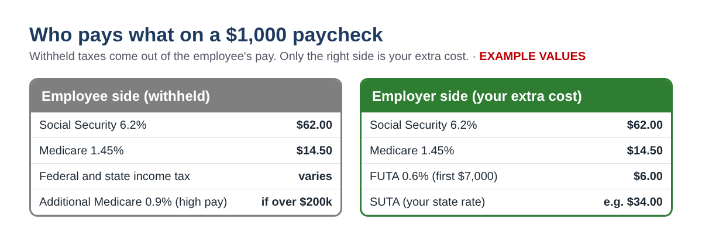
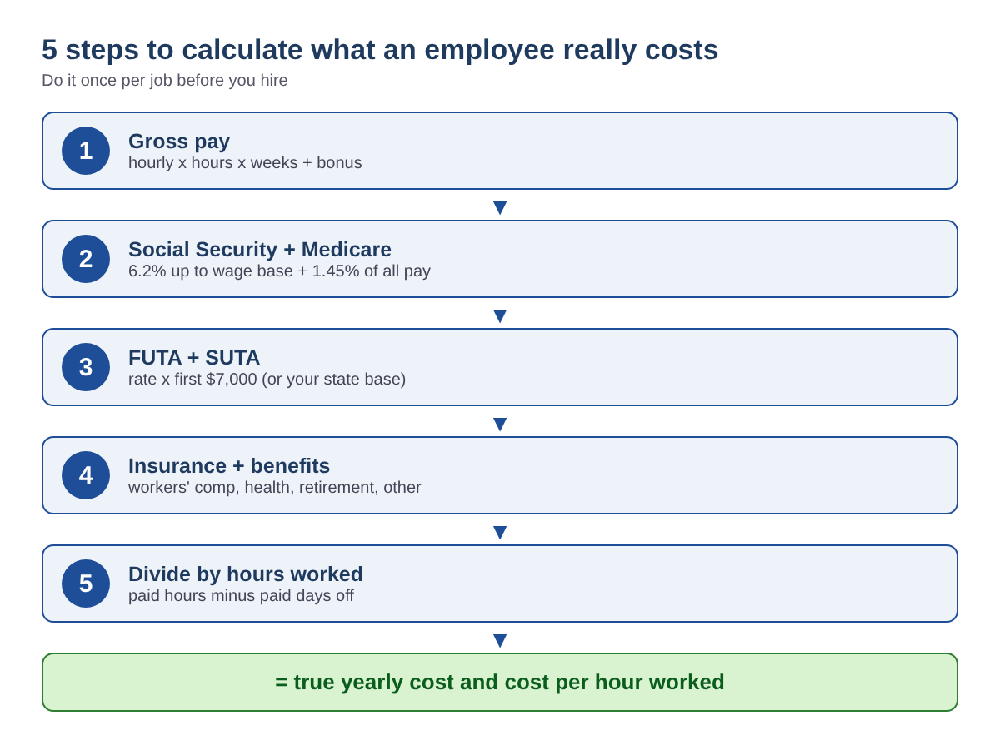
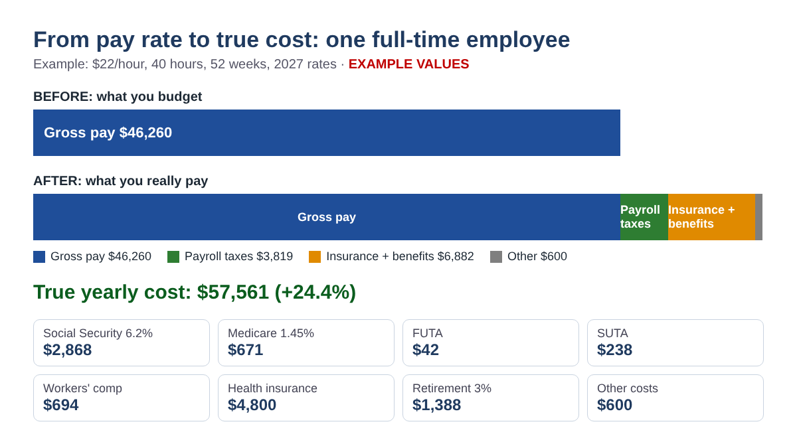
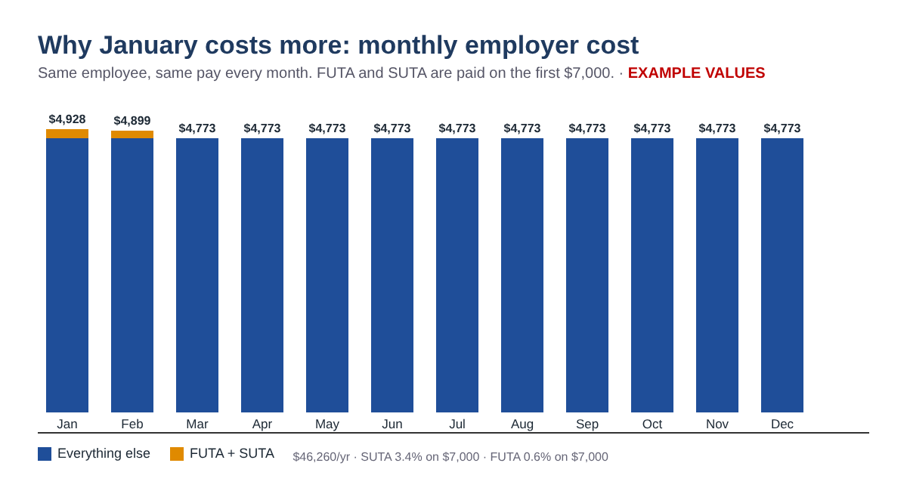

You found a great candidate and agreed on $22 an hour. Then the first quarter ends and the bank account says the hire cost a lot more than $22 an hour. That gap is normal. On top of wages, an employer pays its own share of Social Security and Medicare, federal and state unemployment tax, workers' compensation insurance and any benefits it offers. This guide shows small business owners how to calculate the true yearly cost of one employee by hand, with formulas you can type into Excel or Google Sheets, so you can set a hiring budget and prices that actually cover it.
Educational information only. This post is not tax, legal or payroll advice. State and local payroll taxes, insurance prices and labor laws vary, so check your state agency, insurer and payroll provider before you decide. All dollar amounts in the examples are example values.
When you run payroll you handle two kinds of money. The first is money you withhold from the employee: their 6.2% Social Security, 1.45% Medicare and income tax. That money is part of their gross pay, so it is not an extra cost to you. The second is money you pay on top of gross pay: your matching 6.2% and 1.45%, unemployment taxes, insurance and benefits. Only the second kind raises your cost, and it is the part most hiring budgets forget.

| Employer cost | 2026 | 2027 | How it works |
|---|---|---|---|
| Social Security (employer share) | 6.2% | 6.2% | On wages up to the wage base |
| Social Security wage base | $184,500 | $192,300 | No 6.2% on wages above this |
| Medicare (employer share) | 1.45% | 1.45% | On all wages, no limit |
| FUTA (federal unemployment) | 0.6% | 0.6% | 6.0% on the first $7,000, less up to a 5.4% credit |
| SUTA (state unemployment) | your rate | your rate | Rate and wage base set by your state |
The Additional Medicare Tax of 0.9% on wages over $200,000 is withheld from the employee only; employers do not pay a matching share. FUTA's 5.4% credit assumes you paid your state unemployment tax on time. In a "credit reduction state" the credit is smaller and you owe extra on Form 940; the U.S. Department of Labor publishes the final list each November, so check it before you finish your year-end budget.

Gross pay = hourly rate x hours per week x weeks paid, plus any bonus. Include paid vacation and holidays, because they are paid weeks. For a salaried employee, gross pay is the salary plus bonus. In a sheet with the rate in B2, hours in B3, weeks in B4 and bonus in B5: =B2*B3*B4+B5.
With gross pay in B6, for 2027 type =MIN(B6,192300)*6.2% for Social Security and =B6*1.45% for Medicare. For 2026 use 184500 instead of 192300. The MIN() keeps the 6.2% from going past the wage base.
FUTA: =MIN(B6,7000)*0.6%, which is at most $42 per employee per year. SUTA: =MIN(B6,B7)*B8, where B7 is your state's taxable wage base and B8 is the rate on your state notice. New employers usually get a standard new-employer rate. Do not copy another state's numbers; wage bases range from the federal minimum of $7,000 to much higher amounts.
Workers' compensation is usually quoted per $100 of payroll: =B6/100*B9. Add your monthly share of health insurance x 12, any retirement match (for example =B6*3%) and other yearly costs such as payroll service fees, uniforms, equipment and training. Employer-paid health premiums and retirement contributions are generally not wages for Social Security and Medicare, so you do not add payroll tax on them.
Add steps 1 to 4 for the true yearly cost. Then divide by the hours the person actually works: paid hours minus paid days off. With paid days off in B10: =Total/(B3*B4-B10*B3/5). This is the number to use when you price a service or decide whether a shift pays for itself.
Here are three common jobs, calculated with the steps above. All values are examples, including the state rates and insurance prices.
| Example | A: Part-time cashier | B: Full-time staff | C: Salaried manager |
|---|---|---|---|
| Pay | $17/hr x 25 hrs | $22/hr x 40 hrs + $1,000 bonus | $200,000 salary |
| Gross pay | $22,100.00 | $46,760.00 | $200,000.00 |
| Social Security + Medicare | $1,690.65 | $3,577.14 | $14,822.60 |
| FUTA + SUTA | $280.00 (3.4% on $7,000) | $1,042.00 (2.5% on $40,000) | $147.00 (1.5% on $7,000) |
| Workers' comp | $265.20 ($1.20/$100) | $1,636.60 ($3.50/$100) | $600.00 ($0.30/$100) |
| Health + retirement + other | $300.00 | $7,602.80 | $20,800.00 |
| True yearly cost | $24,635.85 | $60,618.54 | $236,369.60 |
| Extra cost on top of pay | 11.5% | 29.6% | 18.2% |
| Cost per hour actually worked | $19.40 (6 days off) | $30.93 (15 days off) | $123.11 (20 days off) |
Check example B by hand: $22 x 40 x 52 = $45,760, plus $1,000 bonus = $46,760. Social Security $46,760 x 6.2% = $2,899.12; Medicare $678.02; FUTA $42; SUTA $40,000 x 2.5% = $1,000; workers' comp $1,636.60; health $450 x 12 = $5,400; retirement 3% = $1,402.80; other $800. Total $60,618.54. Worked hours = 2,080 - 120 = 1,960, so $60,618.54 / 1,960 = $30.93 per hour worked, about 40% more than the $22 pay rate.
Example C shows the wage base cap: Social Security is $192,300 x 6.2% = $11,922.60, not $200,000 x 6.2% = $12,400.

FUTA and most state unemployment taxes apply only to the first part of each employee's wages each year. For a full-time employee you pay almost all of it in the first one or two months, and it starts over every January. If the same $46,260 employee is paid evenly, the January cost is about $4,928 and the March cost about $4,773. That is a small difference for one person but a real one for a team of ten, and it lands right when year-end bills arrive.

Wages are paid from gross profit, not from sales. If you keep 60 cents of every sales dollar after the cost of goods, the extra sales needed to cover a $57,561 employee are =57561/60% = $95,934 a year, about $7,995 a month or $1,845 a week. Run this number before you post the job, not after.
Employer payroll taxes alone are about 7.65% plus unemployment tax. With workers' comp, health insurance and a retirement match, many small businesses see 10% to 30% or more on top of gross pay. Calculate your own number; it depends heavily on benefits and your state.
No. You withhold it from wages over $200,000, but there is no employer match.
FUTA and SUTA apply to that year's first wages, then start again in January for the same person. Budget for both.
Reported tips are wages for Social Security and Medicare, so the employer share applies to them. Add expected yearly tips to gross pay when you estimate employer FICA.
Your state unemployment insurance agency sends a rate notice, usually around the start of each year. New employers get a rate when they register.
You can download the ready-made True Cost of an Employee Calculator 2026-2027 for free in the Free kit download box below (Excel + PDF guide, no sign-up).
Disclaimer: This article is for educational purposes only and is not tax, legal or payroll advice. Rates and rules change; verify with the official sources below or a qualified professional before relying on any number.